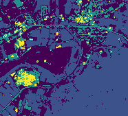

Clustering¶
In this example we will do some simple cell clustering based on multiband imagery.
Setup¶
First some setup:
In [3]:
import astraea.spark.rasterframes._
import astraea.spark.rasterframes.ml.TileExploder
import geotrellis.raster.io.geotiff.SinglebandGeoTiff
import geotrellis.raster._
import geotrellis.raster.render._
import org.apache.spark.ml.Pipeline
import org.apache.spark.ml.clustering.{KMeans, KMeansModel}
import org.apache.spark.ml.feature.VectorAssembler
import org.apache.spark.sql._
// Utility for reading imagery from our test data set
def readTiff(name: String): SinglebandGeoTiff = SinglebandGeoTiff(s"../samples/$name")
implicit val spark = SparkSession.builder().
master("local[*]").appName(getClass.getName).getOrCreate().withRasterFrames
spark.sparkContext.setLogLevel("ERROR")
import spark.implicits._
Out[3]:
import astraea.spark.rasterframes._
import astraea.spark.rasterframes.ml.TileExploder
import geotrellis.raster.io.geotiff.SinglebandGeoTiff
import geotrellis.raster._
import geotrellis.raster.render._
import org.apache.spark.ml.Pipeline
import org.apache.spark.ml.clustering.{KMeans, KMeansModel}
import org.apache.spark.ml.feature.VectorAssembler
import org.apache.spark.sql._
readTiff: (name: String)geotrellis.raster.io.geotiff.SinglebandGeoTiff
spark: org.apache.spark.sql.SparkSession = org.apache.spark.sql.SparkSession@65bb2f1
import spark.implicits._
Loading Data¶
The first step is to load multiple bands of imagery and construct a single RasterFrame from them.
In [4]:
val filenamePattern = "L8-B%d-Elkton-VA.tiff"
val bandNumbers = 1 to 4
val bandColNames = bandNumbers.map(b ⇒ s"band_$b").toArray
// For each identified band, load the associated image file, convert to a RasterFrame, and join
val joinedRF = bandNumbers.
map { b ⇒ (b, filenamePattern.format(b)) }.
map { case (b, f) ⇒ (b, readTiff(f)) }.
map { case (b, t) ⇒ t.projectedRaster.toRF(s"band_$b") }.
reduce(_ spatialJoin _)
Out[4]:
filenamePattern: String = L8-B%d-Elkton-VA.tiff
bandNumbers: scala.collection.immutable.Range.Inclusive = Range(1, 2, 3, 4)
bandColNames: Array[String] = Array(band_1, band_2, band_3, band_4)
joinedRF: astraea.spark.rasterframes.RasterFrame = [spatial_key: struct<col: int, row: int>, band_1: rf_tile ... 3 more fields]
We should see a single spatial_key column along with 4 columns of
tiles.
In [ ]:
joinedRF.printSchema()
ML Pipeline¶
SparkML requires that each observation be in its own row, and those
observations be packed into a single Vector. The first step is to
“explode” the tiles into a single row per cell/pixel.
In [5]:
val exploder = new TileExploder()
Out[5]:
exploder: astraea.spark.rasterframes.ml.TileExploder = tile-exploder_9ea64c96fde0
To “vectorize” the the band columns, as required by SparkML, we use the
SparkML VectorAssembler. We then configure our algorithm, create the
transformation pipeline, and train our model. (Note: the selected value
of K below is arbitrary.)
In [6]:
val assembler = new VectorAssembler().
setInputCols(bandColNames).
setOutputCol("features")
// Configure our clustering algorithm
val k = 5
val kmeans = new KMeans().setK(k)
// Combine the two stages
val pipeline = new Pipeline().setStages(Array(exploder, assembler, kmeans))
// Compute clusters
val model = pipeline.fit(joinedRF)
Out[6]:
assembler: org.apache.spark.ml.feature.VectorAssembler = vecAssembler_cffd20eac427
k: Int = 5
kmeans: org.apache.spark.ml.clustering.KMeans = kmeans_78708a4e7fbe
pipeline: org.apache.spark.ml.Pipeline = pipeline_8d53c3f74ef7
model: org.apache.spark.ml.PipelineModel = pipeline_8d53c3f74ef7
Model Evaluation¶
At this point the model can be saved off for later use, or used immediately on the same data we used to compute the model. First we run the data through the model to assign cluster IDs to each cell.
In [7]:
val clustered = model.transform(joinedRF)
clustered.show(8)
+-----------+------------+---------+-------+------+------+------+--------------------+----------+
|spatial_key|column_index|row_index| band_1|band_2|band_3|band_4| features|prediction|
+-----------+------------+---------+-------+------+------+------+--------------------+----------+
| [0,0]| 0| 0| 9470.0|8491.0|7805.0|6697.0|[9470.0,8491.0,78...| 1|
| [0,0]| 1| 0| 9566.0|8607.0|8046.0|6898.0|[9566.0,8607.0,80...| 1|
| [0,0]| 2| 0| 9703.0|8808.0|8377.0|7222.0|[9703.0,8808.0,83...| 0|
| [0,0]| 3| 0| 9856.0|8983.0|8565.0|7557.0|[9856.0,8983.0,85...| 0|
| [0,0]| 4| 0|10105.0|9270.0|8851.0|7912.0|[10105.0,9270.0,8...| 0|
| [0,0]| 5| 0|10273.0|9463.0|9196.0|8341.0|[10273.0,9463.0,9...| 2|
| [0,0]| 6| 0| 9920.0|9077.0|8480.0|7534.0|[9920.0,9077.0,84...| 0|
| [0,0]| 7| 0| 9559.0|8603.0|7847.0|6829.0|[9559.0,8603.0,78...| 1|
+-----------+------------+---------+-------+------+------+------+--------------------+----------+
only showing top 8 rows
Out[7]:
clustered: org.apache.spark.sql.DataFrame = [spatial_key: struct<col: int, row: int>, column_index: int ... 7 more fields]
If we want to inspect the model statistics, the SparkML API requires us to go through this unfortunate contortion:
In [8]:
val clusterResults = model.stages.collect{ case km: KMeansModel ⇒ km}.head
Out[8]:
clusterResults: org.apache.spark.ml.clustering.KMeansModel = kmeans_78708a4e7fbe
Compute sum of squared distances of points to their nearest center:
In [9]:
val metric = clusterResults.computeCost(clustered)
println("Within set sum of squared errors: " + metric)
Within set sum of squared errors: 1.0416215116259007E10
Out[9]:
metric: Double = 1.0416215116259007E10
Visualizing Results¶
The predictions are in a DataFrame with each row representing a separate pixel. To assemble a raster to visualize the cluster assignments, we have to go through a multi-stage process to get the data back in tile form, and from there to combined raster form.
First, we get the DataFrame back into RasterFrame form:
In [10]:
val tlm = joinedRF.tileLayerMetadata.left.get
val retiled = clustered.groupBy($"spatial_key").agg(
assembleTile(
$"column_index", $"row_index", $"prediction",
tlm.tileCols, tlm.tileRows, ByteConstantNoDataCellType
)
)
val rf = retiled.asRF($"spatial_key", tlm)
Out[10]:
tlm: geotrellis.spark.TileLayerMetadata[geotrellis.spark.SpatialKey] = TileLayerMetadata(uint16raw,GridExtent(Extent(703986.502389, 4249551.61978, 709549.093643, 4254601.8671),29.90640459139769,29.883120236686878),Extent(703986.502389, 4249551.61978, 709549.093643, 4254601.8671),utm-CS,KeyBounds(SpatialKey(0,0),SpatialKey(0,0)))
retiled: org.apache.spark.sql.DataFrame = [spatial_key: struct<col: int, row: int>, prediction: rf_tile]
rf: astraea.spark.rasterframes.RasterFrame = [spatial_key: struct<col: int, row: int>, prediction: rf_tile]
To render our visualization, we convert to a raster first, and then use
an IndexedColorMap to assign each discrete cluster a different
color, and finally rendering to a PNG file.
In [12]:
val predRaster = rf.toRaster($"prediction", 186, 169)
val clusterColors = IndexedColorMap.fromColorMap(
ColorRamps.Viridis.toColorMap((0 until k).toArray)
)
raster.tile.renderPng(clusterColors).write("outputs/clustered.png")
Out[12]:
raster: geotrellis.raster.ProjectedRaster[geotrellis.raster.Tile] = ProjectedRaster(Raster(CroppedTile(ByteConstantNoDataArrayTile([B@75a613f3,186,169),GridBounds(0,0,185,168)),Extent(703986.502389, 4249551.61978, 709549.093643, 4254601.8671)),utm-CS)
clusterColors: geotrellis.raster.render.IndexedColorMap = IndexedColorMap(0x440154ff, 0x3b528bff, 0x21918cff, 0x5cc863ff, 0xfde725ff)
| Color Composite | Cluster Assignments |
|---|---|
 |
 |